阿古智子投书：和平门，一直保持打开 - WOMEN我们
Table of Contents
“我一直在研究社会运动，我认为我们要避免过度的情绪对抗和言语与身体的暴力行为，重视理性，创造一个‘对话的空间'，但我们该怎么办呢？”
May 28, 2024
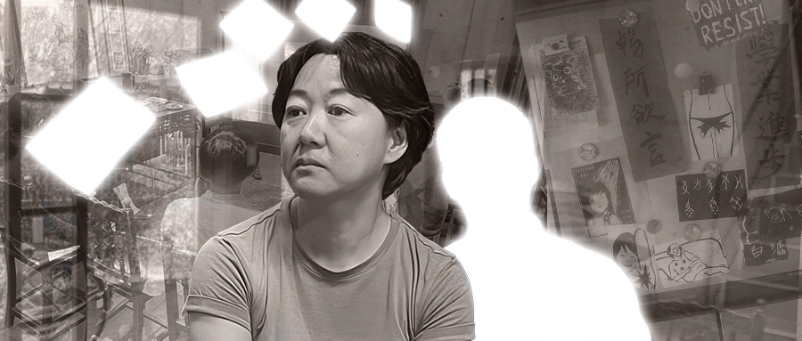
编者按
我们需要怎样的（跨越国境的）公共空间？日本学者、东京大学教授阿古智子长期关注中国社会运动与人权议题，她也是前一段时间，明治大学邀请被指控性侵的学者滕彪参与研讨会事件中，与抗议的中国女权社群进行过深度交流的唯一一名学者。
在这篇文章中，阿古详述了明治大学事件背后的更多细节，也坦率地提出了如何进行负责任的问责，以及克服跨国镇压环境中造成的不信任的问题。她同时反思了自己的性别观念与处境，并讲述了她个人为中国大陆与香港离散社群构建一个实体的公共空间的初衷。我们决定刊登这篇文章，来启发更多讨论与回应。
撰文 阿古智子
编辑 于长夜
平台编辑 覃山
东京中野的“亚洲公共圈”
当你想到东京市中心时，你会想到银座、涩谷、池袋和新宿吗？从新宿乘坐中央线快速列车一站即可到达中野。中野由于交通便利、物价相对低廉，是深受年轻人和外国人欢迎的地区。出了车站北口，就有一条直通中野百老汇的骑楼商店街。充斥着亚文化商品、动漫书籍、生鲜食品；熟食店、服装店、杂货店鳞次栉比-–—不是美国的百老汇，而是中野的百老汇。早在 1966 年，日本第一座购物中心和公寓大楼就建在木结构房屋高度集中的地区，处于时尚的前沿。
商店街纵横交错的狭窄小巷里，遍布着餐馆和居酒屋。白天，这里挤满了前来吃午饭的上班族，晚上，灯火通明的街道上，可以看到下班后来这里喝酒或招待客人的人们喝着酒。
然而，中野站北口周边地区以前是日本帝国陆军的情报机构之一，也是日本陆军中野学校的所在地，这是一所以情报、反间谍和宣传等秘密战争教育和训练为目的的学校。经过再开发，2012年建成了四季之森公园、麒麟啤酒总部大楼、明治大学、早稻田大学学生宿舍以及警察医院等建筑。
中野站北口距离热闹的商圈步行15分钟就是和平之森公园，这里有大型比赛跑道、草坪、棒球场、烧烤场、综合体育馆等。我住在一个安静住宅区的一栋黄色外墙的三层楼房子里，距离那里仅几步之遥，我可以听到鸟儿的鸣叫声，这些鸟儿以公园及其周边为家。从房屋的玻璃墙、梯形的一楼入口，立刻就能看到街对面的家庭式公务员公寓楼（编者注：日本政府向国家公务员提供的廉租房）和沿墙种植的葱茏树木。
日本的房屋往往被树篱或栅栏包围，根本看不到里面的情况。不过，我家一楼的整个入口都是玻璃的，所以从外面可以看到一切。位于入口后面的客房、淋浴间和卫生间被设计成从入口处看不到，而距离入口约8级台阶的厨房也可以隐藏在窗帘后面。通往二楼和三楼的楼梯是中庭结构，从一楼向上看只能看到门，但看不到房间的内部。
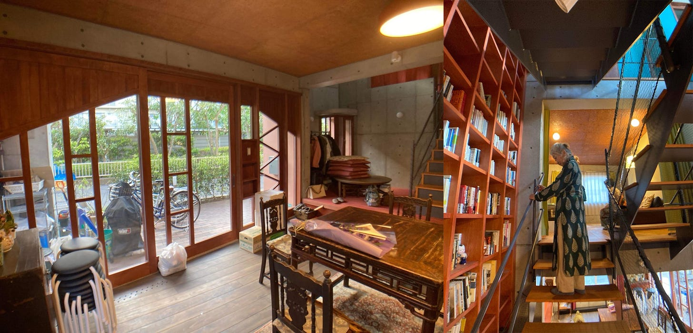
Figure 1: Asian Commons的内部空间（作者供图）
富田玲子和大象设计集团的其他建筑师提供了一种设计，允许私密和开放空间分开使用。我不希望这所房子成为一个被栅栏包围的封闭空间。我们将其命名为“Asian Commons”（简称“AC”，意为“亚洲公共圈”），这是一个向当地社区开放的住宅，我们还建造了可供来自日本和国外的客人入住的房间。三楼是一位在单亲妈妈家庭长大的日本男大学生，靠打工和奖学金考上了大学。在他旁边的房间和一楼的客房里，还可以接受短期/长期住宿的客人。海外客人在此住宿的时间约为几周到三个月。
“和平门”连接外部（那边）和内部（这里）
AC（亚公）也是“思考和平门问题协会”（和平门协会）的办公地点，其成员经常聚集在这里开会。“和平门”是丰多摩监狱（中野监狱）正门的俗称，这里曾经关押了无产阶级作家小林多喜二、无政府主义者大杉荣、哲学家三木清等许多政治犯和思想犯。“和平门研究小组”的成立是为了从历史的角度重新考虑具有建筑价值的正门，并有效地保护和利用它。
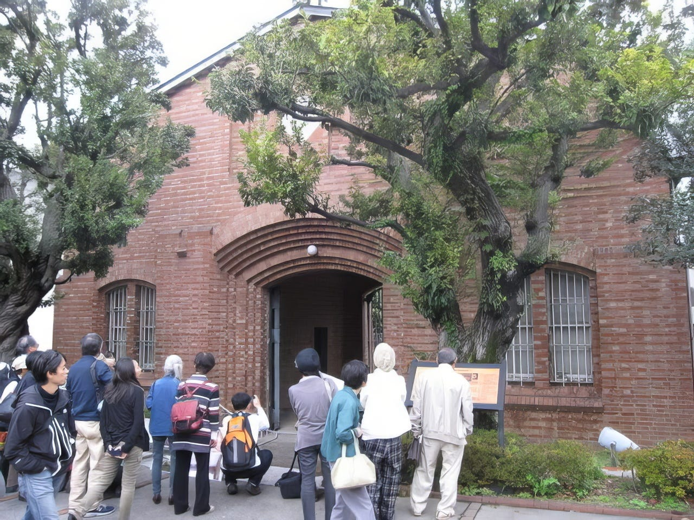
Figure 2: 东京市中野区丰多摩监狱正门“和平门”遗址（作者供图）
得知正门仍保留在儿子就读的中野区和平之森小学的搬迁地点后，我加入了“和平门研究小组”，并开始了这一活动。了解它的历史就是触发因素。我们多次拜访中野区议会和区政府，向区长、区工作人员、区议会议员分发资料，请愿保存，并设立市民学习场所。原本有被拆除的可能性，但在2021年6月，它被区指定为有形文化财产。目前正在进行施工，将其搬迁到目前位置以西约 100 米处。
这个温暖的砖门，是大正时代代表性建筑师后藤庆二现存的唯一作品，原本我们想将它保留在小学的新场地上。我们联系了设计了埼玉县宫代镇社区中心进修馆（1980年）和笠原小学（1982年）的大象设计集团。我们希望中野区政府能利用这个大门设计一所独特的小学。我们拜访了建筑师富田玲子。笠原小学的走廊是开放式的半室外空间，被称为“赤脚学校”，设计时考虑到了这片土地 的记忆。我们也期待和平之森小学新校舍的设计，能够纳入并利用和平门。
因大门最终决定搬迁，我们这个梦想无法实现。但我们还是 能够请大象设计集团设计Asian Commons。入口处的玻璃以我和丈夫于2002年结婚的中国陕西省的窑洞与和平门为主题，富田女士多次重新绘制了插图。窑洞是一种在山体侧面凿洞而建的房屋，常见于陕西北部、甘肃东部、山西中南部、河南西部等农村地区。在富田女士的建筑中，内部和外部以某种方式相连，她经常创造出既非内部又非外部的空间。例如，这是一个半户外空间，就像日本房屋的阳台一样，富田将其描述为“あいまいもこ”（暧昧模糊）。 AC还被设计为日本与中国和香港等其他国家与地区能够联系和对话的场所，就是外部与内部，过去、现在与未来。
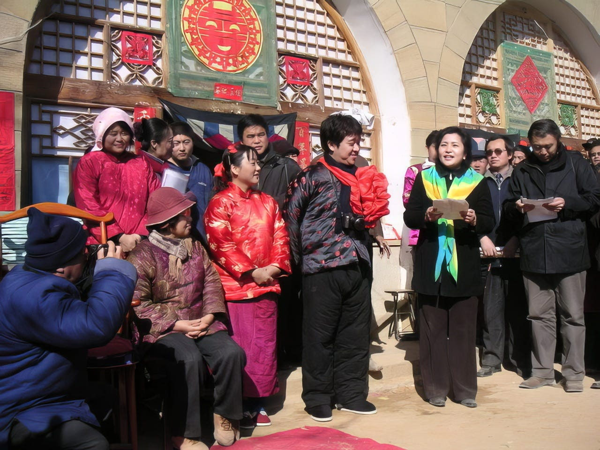
Figure 3: Asian Commons的入口设计参考了中国西北传统民居建筑窑洞；图为2002年阿古智子与丈夫结婚时的留影（作者供图）
然而，我们认为玻璃入口存在安全风险，一度考虑安装窗帘或百叶窗。开放性并吸引注意力实际上可以让人感觉更受保护。我研究现代中国，有时会在媒体上对中国政府发表批评性评论，而且我深入参与中国的人权问题，所以我朋友们开玩笑说：“他们会在你家安装窃听设备！”每次我都回答：“请打开你的窃听器。”我会让中国有关部门的人听听聚集在这里的人们的喋喋不休，我相信他们会被感动。
相互尊重地共同生活
自我们创办AC以来已经过去了两年半。住在这里的过程中，我有多少次被感动、流泪、开怀大笑呢？
从2022年底到2023年伊始在AC呆了一个月的Esther，也出现在我的书《香港：何去何从》中。当我2019年12月访问香港时，Esther带我参观了这座城市并向我讲述了她的各种故事。后来这本书的中文版出版，她就负责翻译。
《国安法》在香港实施，立法会议员、记者、律师、学者、市民陆续被捕。参与民主运动的年轻人现在正在删除他们/她们的社交媒体帖子。经历了催泪瓦斯、投掷燃烧瓶的活动后，他们/她们身心俱疲，更陷入了言论管制的阴暗氛围中。尽管如此，Esther仍然继续过着自己的日常生活，包括家人、工作和爱情。
和Esther在一起的时光平静地过去了。每天，我们两个人并肩站在厨房里做饭。每道菜她都高兴地用手机拍照。虽然简单，但色彩斑澜、营养丰富。虽然没有什么特别的事情，但我心里还是有些高兴的。我不想打破我和她平静的生活，所以我尽量不问她任何复杂的事情。一起去公共浴场回来的路上，她突然这么说了：“有一天，我走在香港的大街上，我无法停止哭泣。当我停下来哭泣时，一个路过的男人对我说，‘如果你想哭，就哭吧'。”我没有深入询问她流泪的原因，但我感觉到她的心门正在一点点打开。
香港人Michelle毕业于职业学校，曾担任电视节目制作助理和化妆品销售员，2019年辞去工作，最终为“反对逃犯修例法案”的示威活动提供后勤支持。当香港发生重大变化时，她在思考今后的生活时，想到了去日本学习农业。她来日本参加农业学校的入学考试之前，在AC学习了一个月的日语并完成了入学考试的准备。今年，在她的带领下，一名香港男生和一名香港女生将在参加农业学校入学考试之前留在AC学习日语， 而居住在日本的华人和日本志愿者将轮流指导两位准备面试。
许多来自中国的客人也入住AC并参加了各种活动。曾因政治原因被吊销律师执照的女律师、长期支持家庭暴力受害者组织的女性、同性恋记者、女权运动的活动家、纪录片导演等。这些朋友主要参与我所在的东京大学以及相关机构开展的项目，所以虽然我们提前通过电子邮件沟通过，但对大多数人来说，这还是第一次见面。因此，我担心很难互相照顾，缩短距离，但先搬进来的人却告诉后来搬进来的人如何倒垃圾，如何使用洗衣机和厨房，详细地解释了自己的生活节奏和思维方式，所以家里的角色划分就自然而然地确定了。 每个人都在致力于社会问题，所以每个人都有尊重他人的敏感度。
以前我们都会按照自己的时间节奏，在家里最喜欢的地方度过时光，比如清早起床在城里散步，或者开在线会议直到深夜，但出于某种原因，人们常常聚集在厨房里。有人带着她的笔记本电脑，开始写她必须写的报告，并阅读了她从那天访问的组织收到的材料和小册子。当有人说：“我今天有点累了，来点酒、吃点零食怎么 样？”其他人会过来说：“我也想喝酒！” “今天我要给你做炸猪排，所以你把沙拉里的生菜洗干净吧” “我想重现前几天去的居酒屋的冲绳料理，所以今天就买了食材！可以一起尝尝！” 我们把咖啡和面包放在炉子旁边的架子上，轮流买冰箱里的鸡蛋、果汁和牛奶。早餐大家都吃家里有的东西。时时出现的不寻常的食材和美味的糖果，成为了厨房里 每天的话题。
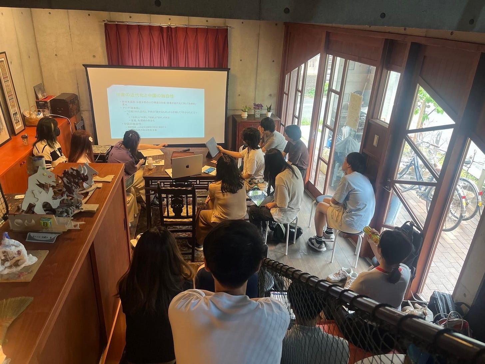
Figure 4: Asian Commons过往举办公开活动的照片（作者供图）
扩大同理心圈子
住在AC的人们坐在厨房的餐桌旁，一旦开始交谈就很难停下来。当有人谈论他们在日本性暴力或同性恋受害者支持小组中听到的情况时，其他人开始收集并分析中国的类似案件。对于许久未去中国的我来说，聆听他们的故事是亲身了解中国变化的绝佳机会。然而，作为性暴力的受害者，小凛有时发现很难反思自己的经历。那天，在她去过的一个地方，有人问她“请告诉我你的经历”，她无言以对，泪流满面。回来后，她在厨房停下来说：“老师，我回家了。”然后拿出她在便利店买的 草莓和小菜，抓起饮料就跑回了自己的房间。
小凛在三个月的停留期间，积极参加有关女权主义、性暴力和LGBTQ问题的学习课程，并开始接受其他像她一样遭受过性暴力的女性的咨询。“为什么日本社会不认真审视约翰尼的问题呢？”她有时会对日本的父权社会结构进行尖锐的分析，这种结构因既得利益 而根深蒂固。当她在日本时，约翰尼的办公室甚至没有公开承认已故约翰尼·喜多川造成的性侵犯问题。
许多人聚集在小凛身边。2023年5月上旬，她在“东京彩虹骄傲”游行中举起了象征LGBTQ人权的彩虹旗，以坚决的态度走在队伍的最前面。该游行旨在提升社会中包括LGBTQ人群在内的性少数 群体的能见度。“推翻父权制”、“让我们相信未来，让我们相信女性”、“米兔”、“让小花梅发声！”。
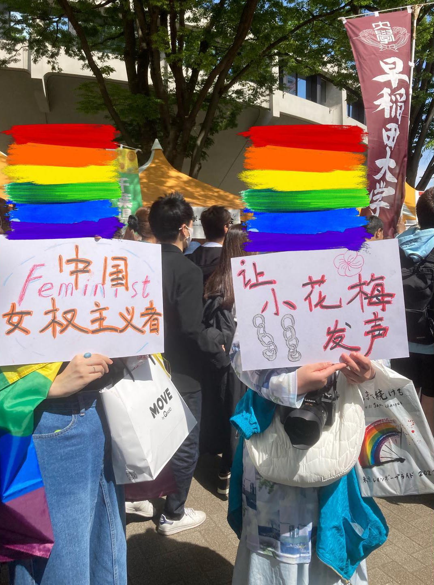
Figure 5: 2023年“东京彩虹骄傲”游行期间，中国女权主义者手举标语（图片来源：instagram账户@chinesequeerswillnotbecensored）
在中国众所周知，小花梅是八个孩子的母亲，2022 年 1 月下旬，她在江苏省徐州的一间狭窄小屋里被发现的时候，脖子上被铁链锁着。她是人口贩卖的受害者。一位来访的爱心博主拍摄的视频显示，她牙齿很少，衣着暴露，而且很害怕。小花梅很可能是被迫生下孩子的，但当地政府最初否认人口贩卖，并称她患有精神疾病。
在不容忍异议的环境下，中国媒体上的“言论”已经消失，宣传已成为常态。抵制这种压迫条件的年轻人举着白板走上街头，要求言论自由。不仅在中国，在日本也有很多华人发声。想要以更真实的方式表达自己的年轻人，通过版画和插图表达了对权威的批评。在AC的餐桌上，她们铺了一张报纸，用刻刀在木板上雕刻，蘸上油墨，然后拓印到纸上。小凛与这些 年轻人密切合作，为他们/她们提供自我表达的空间。
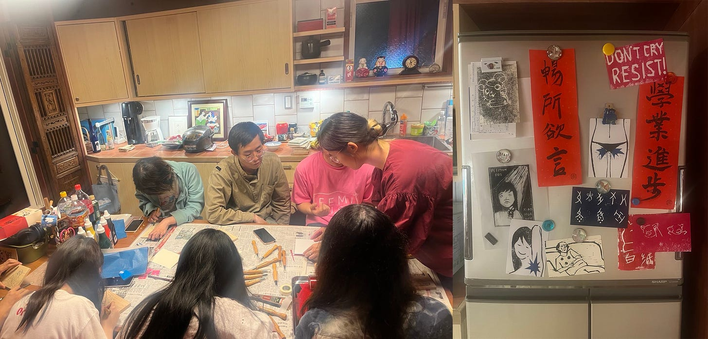
Figure 6: 年轻人在Asian Commons的厨房里以木刻版画的形式进行公共表达（作者供图）
女权主义的觉醒？
其实，当我搬到AC的时候，我的身心都极度疲惫。小学六年级的儿子为了参加私立初中的入学考试，每天都去补习班学习到很晚，但他的成绩却没有达到预期的提高，他感到很沮丧。我的丈夫在北海道工作，因为担心儿子，每周都会回东京，我们经常因为对孩子教育的不同看法而发生冲突。我不会在这里写，因为它太长了，但我认为日本教育存在严重问题，它迫使孩子们参加竞争激烈的入学考试。我和丈夫都在经历更年期，有时候很难控制情绪。
当我们的婚姻关系陷入混乱时，我的丈夫对我更加严厉。因为由于建筑公司的规划错误，我们在AC的搬家时间表被大大推迟。我们无奈只能搬进去，房间里的很多地方，比如厕所、浴室、书架、厨房都还没有完工，而且我们不得不住在施工中，噪音很大，让我们觉得很不舒服。在这种情况下，和我们一起住在AC的香港和中国朋友带我到附近的公共浴室或公园休息一下，他们/她们用自己与家人的关系作为例子，冷静地分析婚姻问题。
也许与我出生和成长的环境有关，但直到最近，我从未因为作为女性而感到受到严重的歧视。然而， 当我开始与来自华人女权主义者和性少数群体聚集在AC之后，我意识到我在婚姻中、在抚养孩子的过程中也承受着不公平的压力。我从来没有想过用“女权主义者”这个词来形容自己，但我开始觉得，作为一个女人，我应该更加自信。
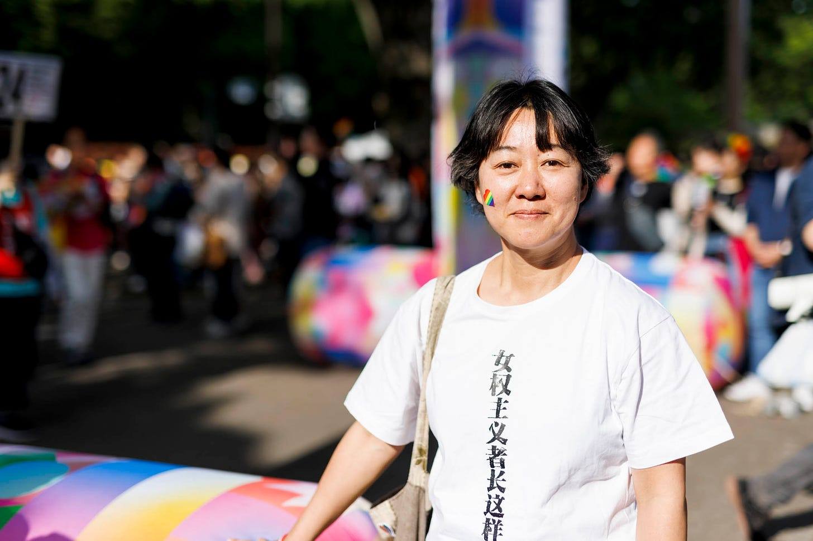
Figure 7: 阿古智子参加“东京彩虹骄傲”游行，身穿“女权主义者长这样”文化衫，系中国女权活动家所赠（图片来源：端传媒；Viola Kam摄）
在我小学五年级的时候，我发现我的母亲得了癌症。母亲在与病魔抗争三年左右后去世，父亲将自家一楼改造成面馆经营，一边工作一边抚养我、妹妹和弟弟。当我母亲在的时候，我父亲把大部分家务和照顾孩子的事情都交给了我母亲，但我母亲去世后，我坚持认为因为我是长女，所以让我负责所有家务是不合理的，而且我还要求我父亲跟我一起做清洁和做饭。起初，父亲不适应新的生活，经常和我发生冲突，但后来他开始和我分担家务。
父亲要还清开面馆时借的钱，还要支付三个孩子的学费，实属不易。不过，当时日本经济正在崛起，面馆的生意兴隆，所以我家的经济并没有那么紧张。我的生活费用由父亲委托给我，我可以自己决定自己的日常采购，我从未感受到父亲的压力来干涉我对学业或职业道路的选择。其实，说父亲忙于工作，没有时间参与我的教育会更准确。与我的妹妹和弟弟相比，我的学业成绩更好，所以我的父亲经常告诉我，让我自己决定自己的道路也没有问题。
在这种情况下，为了平衡家务和学习，我被迫过着有时间压力的生活，但我能够决定自己的道路，做我想做的事情。进入大学或研究生院，或者在大学里找到工作时，我很少觉得身为女人是痛苦的。
小凛突然问我：“老师，您被男人性骚扰过吗？真的没有这样的经历吗？”我想起来，在香港的一家发廊里，我觉得有什么东西撞到了我的膝盖。我记得自己有点儿奇怪的感觉。我太麻木了，没有立刻意识到，但直到很久以后，我才意识到那是发廊理发师的生殖器压在我身上。我也曾从小学回家的路上被男子追赶。然而，幸运的是，这是我唯一的可怕记忆，而且我从未成为任何其他公然性骚扰或性暴力的受害者。然而，在恋爱中，我却被看不起女人的男人甩了。我很庆幸自己没有和那样的 男人继续交流。但现在想来，我当时很伤心，因为我被甩了。如果我更多地强调女人的尊严，我可能就不会伤心的。
邀请涉嫌性暴力的人参加研讨会吗？
渐渐地，我开始对女权主义产生兴趣，开始认识到自己的立场，并开始经常与华人女权主义者一起举办讲座和工作坊。日本著名女权主义者、上野千鹤子教授今年2月在东京大学举办的讲座，原本预留了200人的场地，但开放报名后10天内，已经有200人申请。所以改为可容纳近400人的大厅。那之后不久，华人女权主义者们针对滕彪准备参加明治大学要举办的“中国自由主义研讨会”一事发表了公开信。我还要在研讨会上发言，所以我收到了女权主义者的电子邮件。
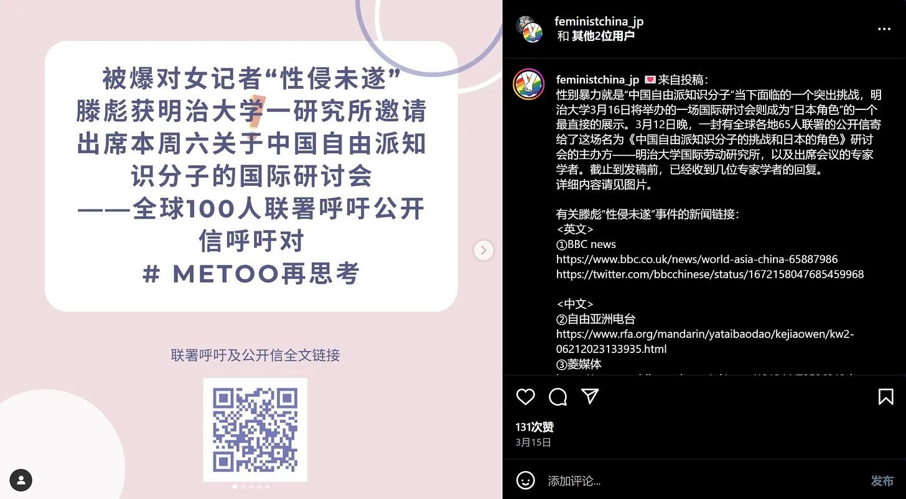
Figure 8: “在日中国女权连带会”针对滕彪出席明治大学研讨会一事，发表公开信及联署呼吁（图片来源：“连带会”instagram截图）
2023年6月，滕彪针对2016年自己向一名女性记者心语“求爱未遂”做出的行为，在推特上发出一份公开道歉声明。滕彪否认试图强奸她，但心语要求滕彪在声明中加入“强暴未遂”的说明。
当2023年我们开始筹划这个研讨会时， 我向明治大学国际劳动研究所（以下简称“研究所”）提出了疑问，让他们考虑一下邀请滕彪是否合适。此后，研究所也开始收集信息。 我研究中国的公民社会、新公民社会运动、维权运动等，所以滕彪是其中关键人物之一。我认识滕彪，甚至还在他目前居住的美国家中住过。
发出公开信的女权主义者们表示，尽管滕彪是“公众人物”，却没有接受独立第三方的公开调查，他像什么都没发生过一样，继续从事公共活动。就在去年六月，我在美国出差时，听到了滕彪本人的话。 据滕彪介绍，他担任董事的多个机构和他任教的大学成立了专家评审委员会，并进行了讨论。 对于学校的回应，我们也向在该校的一位教授进行了核实。当我见到这位教授时，我告诉他“对于滕彪的案子有很多不同的看法”，他说“我相信滕彪”，他脸上的表情很不高兴，然后就打断了跟我的会话。
之后我继续自己收集信息，询问各种人的意见，但没有足够的材料来做决定。 我没有看到滕彪和教授提到的审查委员会准备的报告 ，最重要的是，我从未与起诉滕彪的女记者接触，也没有听到她的说法。
最终，我没有反对滕彪参加明治大学的研讨会。如果对滕彪的强奸未遂指控不属实，那么对他就是诬告。由于除了当事人的证词之外，没有任何物证，我无法对实际发生的事情做出任何判断。女权主义者的公开信中使用了“受害者”一词，但那些可能被错误地贴上“加害者”标签的人，不仅会受到名誉的损害，而且其家人和相关方也会受到经济和社会层面的损害。此外，如果在这个问题上重新激化争论，可能会侵犯滕彪和女方及其家人和相关人员的隐私，并可能造成二次损害。
不过，可以肯定的是，滕彪安排该女子与他住在同一间酒店房间的行为是一个错误，而女权主义者呼吁研究所公布防止性骚扰的措施也是出于这一理由。然而，研究所研究助理稲垣先生说“我们应该考虑女性的感受，我们不应该拒绝这种程度的要求”的时候，我却回答：“如果我们按照她们的要求去做，我们这些非专家就会对一些难以判断的问题做出判断。”我现在有点儿后悔。
我很清楚#MeToo运动之所以蔓延，是因为我们不能仅仅依靠法院和警察，因为我们无法在现有司法体系中得到公平的待遇。由于社会地位的原因，有的人想举报却不敢举报，有的人被认为是说谎，觉得很痛苦。
然而，现实是非常残酷的。改变不平等的社会结构需要时间和努力。如果人类想要在短时间内彻底改变社会长期创造的东西，就需要使用极其强大的力量。这可能会导致言语暴力，以意想不到的方式伤害人们，并制造其他受害者。 我一直在研究社会运动，我认为我们要避免过度的情绪对抗和言语与身体的暴力行为，重视理性，创造一个“对话的空间”，但我们该怎么办呢？
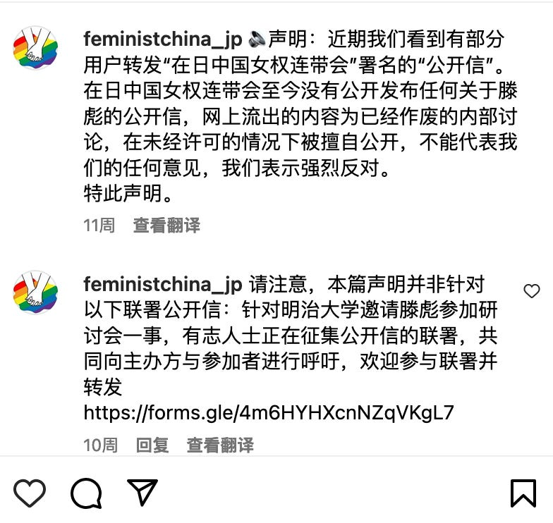
Figure 9: “连带会”正式发布的公开信，较此前流出版本，更为理性和严谨（图片来源：“连带会”instagram截图）
改变想法，大学至少应说明应对性暴力措施
关于滕彪问题，我继续与华人年轻女权主义者们进行交流。“在日中国女权连带会”（以下简称“连带会”）利用 Instagram 和 Matters 等社交媒体平台传播各种活动信息，以及有关社会问题和事件的抗议和声援信息。我担心这件事会引起女权主义者网络里的冲突，她们辛辛苦苦建立起来的运动基础会被摧毁。最终，这种分裂会导致男性主导社会的活力。为了防止这种情况发生，我们需要坚持不懈地继续女权主义者之间以及与非女权主义者之间的对话，同时调和不同的意见。
这就是为什么我想与“连带会”的成员进行对话。我听有人说“应该阻止滕彪参加研讨会”、“应该向明治大学研究所施压，阻止研讨会召开”。我想知道“连带会”的各个成员们从她们的角度如何来看这个问题。然而，即使我问了周围的朋友，大家都不知道“连带会”有多少人，也不知道主要成员是什么样的人。
在明治大学研讨会的前一天，我们安排了一个与滕彪交谈的机会。除了将在研讨会上发言的学者和研究所相关人士外，媒体人士也参加了会议。我们邀请了“连带会”的成员来参加这次会议，然而她们都没有来。【编者注：2024年6月15日，“连带会”发表了相关回应文章《关于滕彪出席国际研讨会的公开质询与联署――行动者们的回顾与再思考》，文章链接：https://matters.town/a/a9s4474c5bbn】
关于会议是公开还是私下进行存在争议。滕彪表示他不想公开。明治大学的教授也同意了。实则这位教授说过，如果“连带会”坚持公开，明治大学必须提起诉讼。我们参加研讨会的学者和稲垣先生都不同意他的想法。不过，参与会议的大部分学者都认为，如果我们公开了会议，就像是研究所公开表明滕彪涉嫌强奸未遂一样。如果滕彪没有这一事实，我们将会对他和他的家人造成二次伤害。
我当时还想着，不可能仅仅因为有过去的“嫌犯”来参加研讨会，就在每次会前都解释风险和防范措施。我从未遭受过性侵犯，所以我想这是没有经历过这种事情的人的感受。不过，鉴于性骚扰和性暴力在会议和出差期间经常发生，而且最近此类事件的受害者也不少，所以大学至少应该简单说明一下其应对措施。我现在就是这么想的。
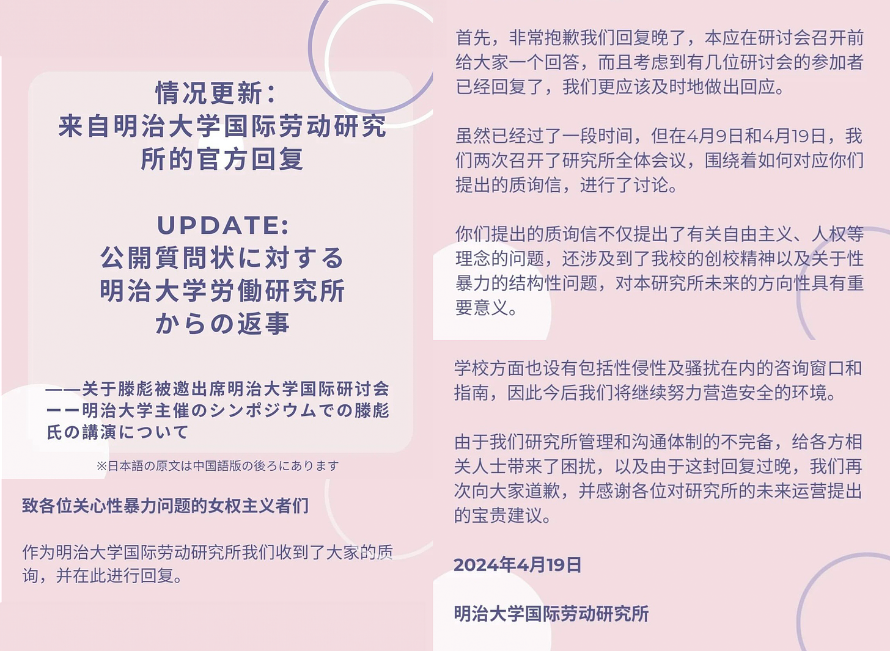
Figure 10: 明治大学国际劳动研究所官方回复（图片来源：“连带会”instagram截图）
在那次会议上，滕彪对于强奸未遂的解释还是和之前一样。最后，我们对滕彪的解释表示了一定的理解，决定如期召开座谈会。
研讨会当天，我们很担心女权主义者会进来并阻止研讨会的举行。如果大学校园内发生破坏行为或暴力行为，情况可能会发展为保安或警察介入的情况。明治大学研究所的一位教授希望，如果要举行抗议活动，可以在大学校园外举行。上午，通往研讨会会场的道路上，散落着写着“沉默就是同谋”、“性暴力就是性暴力”等抗议标语的传单。此外，座谈会结束后，一名女子站在会场外举牌抗议。想着这是一个听她们想法的好机会，我走近举着标语牌的人。结果，她表示自己本来不是要举标 语牌的，只是被告知原来站着的“连带会”的女性，有其他事情先离开，代替她拿着标语牌而已。
我不知道“连带会”有多少女权主义者，她们的想法是什么，以及她们将如何组织这场抗议运动。滕彪一直站在批评中国政府压迫人权的最前线，有传言称中国政府官员正在努力镇压他。虽然我们无法证实传闻是否属实，但研究所的一位学者愤怒地说，“如果我们在这里屈服，就会成为一个被中国政府监视的自由派知识分子。我们再也不能说话了。”
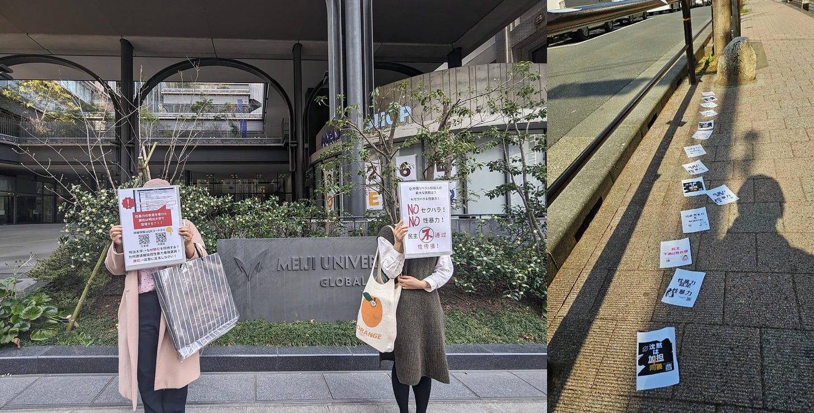
Figure 11: 女权主义者们在研讨会场外手举标语；通往会场的路上散落着印有抗议标语的传单（作者供图）
言论控制破坏了人与人之间的信任关系
当我还感到不安时，我和经常一起举办活动的中国女性小蓝说话，她突然说：“就是我从‘连带会'给您发了邮件。”我回答：“不会吧？”
事实上，我收到了一封电子邮件，但我不知道是她。因为她使用假名。我以前问了几次小蓝她对这件事有什么看法。她回信说，“我不太参与具体行动”，“我不知道‘连带会'的信是否要公开”。这就是为什么我如此惊讶。既然小蓝作为“连带会”成员给我发了电子邮件，那么为什么还要对我撒谎？
之前和小蓝发生过一件令我伤心的事情。我的一个朋友邀请我参加女权主义学习会。小蓝也是组织者之一，但她告诉我：“如果阿古老师要参加，请不要提及您的真名。”她的理由是，我在参与中国有关的人权活动，如果知道有这样的人参与，其他人就很难参与。我想确实如此，所以那天我到达学习会地点时，我决定坐在靠近边缘的地方，这样别人就看不到我，也听不到我的声音。然而，学习的地点是公寓的一个房间，没有任何隐藏的空间。大多数参与者是女性。作为一名女性，我在女性聚集在一起谈论女权主义和性暴力的空间中，感到一种异样的恐惧感。而且还有三四个我很熟悉的人，但即使我与他们进行眼神交流，她们也不理我，就像她们是陌生人一样。 当参与者一一发言时，我就不能说出我的名字，不能发言。我感觉自己无处可去，呼吸困难。
尽管我的身体和灵魂都在这里，但我周围的人却表现得好像我不在那里一样。 我觉得不能再待在这里了，就离开了房间。然后，邀请我参加学习会的朋友注意到了，并跑出了公寓。“老师，对不起，我没有考虑您的感受。”她是本次学习会的主要发言者。那天，许多妇女聚集在公寓里听她的故事。我和她在电梯厅里哭了。
当小蓝后来得知我离开房间后，她给我发了一封长信，说：“我很抱歉没有考虑到您的感受。”我不知道该怎么回复小蓝的信，就口头告诉她：“没关系，以后我好好思考再给您回信”。不过我还没回信。这次，小蓝将“连带会”致明治大学的公开信通过电子邮件发送给了我。当我说“我不希望你这样做”时，她泪流满面，道歉说：“我无意欺骗你。”我哭着回答：“你为什么不诚实地告诉我你的感受和想法？我觉得你不信任我。”
这让我想到，那些表面上看似温和的人，背后可能正在用暴力攻击性的言语互相争斗。小蓝只是为了自己的安全而使用假名而已。但由于我的研究领域，我想起了毛泽东时代的中国历史和情绪激化的反日年轻人。
小蓝说：“当我参与社会运动时，我会呈现出不同的性格。我别无选择，只能承认与我真实的自我不同的人在工作。为了我自己的安全，我不能透露我的真实姓名，我无法向你展示真实的我。”
我问了小蓝，现在“连带会”有多少人，活跃的是什么样的人。小蓝说，她只认识几个人，其他人不知道。看起来她们只是在网上认识的。“连带会”是一个松散的网络。
借钱或买房时，必须以实名提交证件。这是因为交易是基于人们积累的信任。 如果人们不使用真实姓名并使用不同的面孔，那么当出现问题时谁来承担责任？无论是谴责性暴力或性骚扰等具体问题，还是参与社会运动，我认为继续匿名工作是不负责任的。
为什么小蓝必须扮演“双重人格”？这是为了她自己的安全。我不敢相信我必须对我亲近的人、每天与我一起工作的人撒谎。如果这样的事情变得司空见惯，我们就不知道该相信谁了。言论控制破坏了人与人之间的信任关系。
我在大学教中国研究，我当然能够理解言论管制对学生们的影响。那些在课堂上没有表达自己真实想法的学生，担心有人在背后举报，只会在课后通过电子邮件将她的意见发给我。一名参加在东京新宿南口举行的“白纸运动”的学生在暂时返回中国期间，被当地警方审问了两天。家长、亲戚和朋友不理解该学生为什么参加抗议，并继续指责他的行为。即使回到日本后，他也一直宅在家里，没有上大学。他说，一想到有人监视他的一举一动，他就会感到紧张，无法与他人交谈。
另一位学生不能公开发表他的博士论文。尽管该主题与政治没有直接关系，或许是因为涉及地理信息，他作为博士论文作者放假回国时被拘留审讯了一个月。此后他被释放，他为博士论文采访的一些人已被捕。还有一个人试图出版他向日本的大学提交的博士论文，但在他工作的中国大学遇到了问题，所以他甚至辞去了大学教师的工作去当了律师。我不知道这些案例的细节，但博士论文的题目并不是政治敏感的问题。我怀疑在复杂的人际关系中，有人试图损害他人以获取利益。人们互相监 督、互相举报的环境中我们如何建立信任关系呢？
是打击坏人的武器，还是保护弱者的温暖毯子？
当我与聚集在AC的人们互动并体验女权主义的浪潮时，我在学习和思考很多事情。与此同时，日本的公共电视台 NHK 正在播出一部早间电视剧，主角是日本首批通过律师考试的女性之一，由三渊嘉子 (寅子) 主演的电视剧。我每天都会看这部剧，感同身受，女性遭受了如此多的痛苦，而且仍然被法律忽视。有一天，我被一部戏剧中的台词所震撼：“法律是惩罚坏人的武 器，还是保护弱者的温暖毯子？”
看着这部剧的场景，我觉得我们既需要女权主义作为武器，又需要女权主义作为毯子，并且需要根据时间和情况适当地使用它们。尽管都是女性，但她们来自不同的背景，有不同的感受和思维方式，所以有时女性之间会发生争执，坚持不同的做法。 无论如何，不言而喻的是，女性必须继续努力维护自己的尊严，保护她们用自己的身体和思想表达自己的权利。
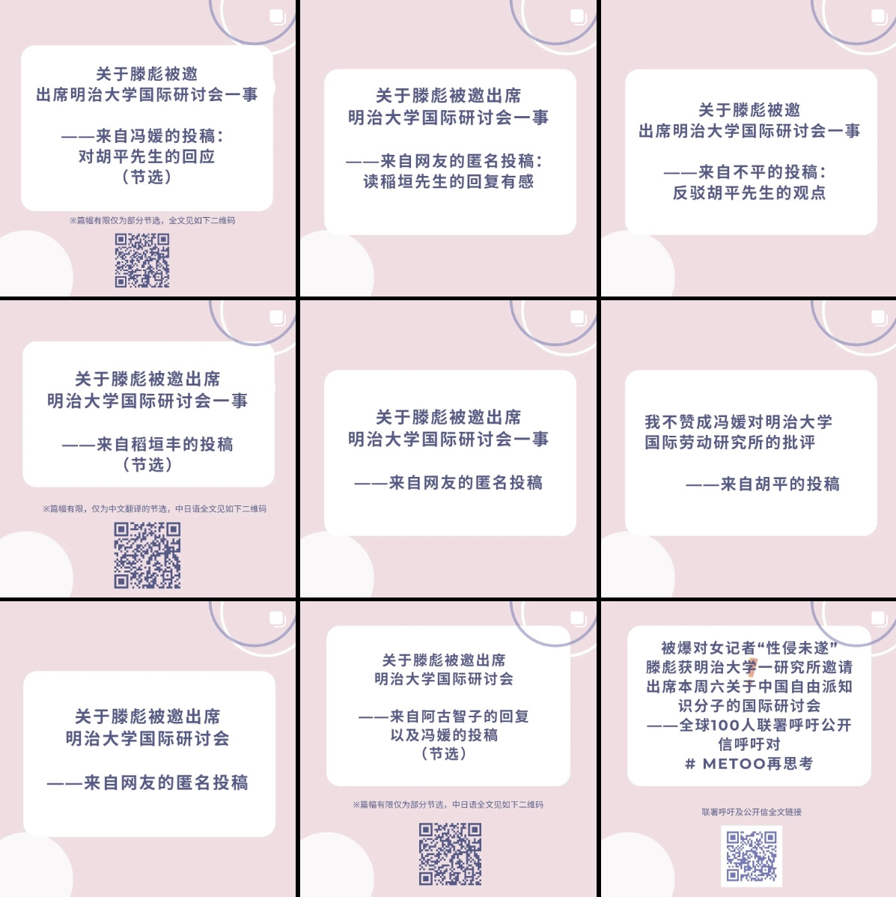
Figure 12: 明治大学研讨会后，“连带会”在网上发布了多篇投稿和回应文章，继续展开对话和讨论（图片来源：“连带会”instagram截图）
关于滕彪，座谈会结束后， 我的六个朋友联系我，告诉我还有其他人受到滕彪的骚扰。 还有人说：“你被滕彪骗了。” 我立即将这一信息转达给明治大学研究所。当研究所的一位教授问滕彪时，他回答说：“她的记忆在她内心发生了变化。”教授反驳：“你真的认为，如果一个女人被猥亵是真的，她的记忆会改变吗？”对此，滕彪回答说：“我不知道。”
滕彪从小是在怎样的环境中长大的？从我丈夫身上我可以感觉到，有很多男人正在努力跟上时代和环境的变化。当我和丈夫发生矛盾时，我常常被他无恶意的话所伤害。如果他不尝试从不同的角度看待事物，他永远不会意识到他的话伤害了女性。我真诚地希望滕彪能够与包括这位女士在内的投诉骚扰的女性会面，并与她们进行一次彻底的讨论。接受自己的错误，可能是困难的，尤其是那些错误与自己目前的公共形象有严重落差的时候，他可能很难接受。然而， 如果我们意识到自己犯了错误，我们就必须道歉并做出弥补，并且我们必须努力不再犯同样的错误。
AC 的外观颜色为黄色。它是香港民主运动的象征色。我选择这个颜色是因为我想到当香港朋友们出狱后，当他们要来这里，转过街角看到黄色的房子时，可能会感到高兴。高仓健有一部电影叫《幸福的黄手帕》。电影中，主角高仓健饰演的主人公得知妻子流产后，情急之下对打架的人拳打脚踢，导致其死亡。妻子在等待丈夫刑满出狱回家时，拿出一大串黄色手帕系在门口的电线杆子上，让他看到她一直在等待他回家。不知道她丈夫看到那些黄色手帕时作何感想。北海道有一个《黄手帕》的 拍摄地，我去那里的时候很感动。
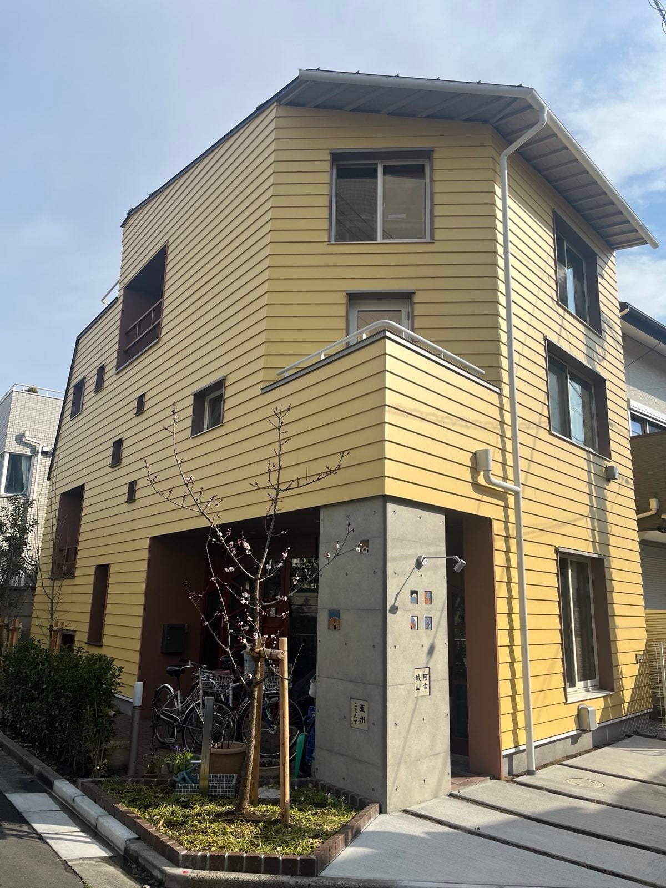
Figure 13: Asian Commons的黄色外墙（作者供图）
我不是基督徒，但我同意“原罪”的想法。人类生来就有互相伤害的倾向。我想继续创造一个地方，让人们在受到伤害或伤害别人时，可以一起思考和讨论，为什么发生这样的事情，以及我们如何才能走到一起。亚洲公共圈的和平门，我想一直保持打开状态。
为了抵抗社交媒体带来的同质化和极化，让读者听到更多元的声音，理解不同的立场，本平台不定期刊载包含个人意见的文章。作者意见不代表平台立场。如果您有不同观点，请给我们投稿商榷，稿件请发至邮箱chugaofirstdraft@proton.me。谢谢您的支持！
“WOMEN我们”长期征文
“WOMEN我们”长期向读者征文，希望呈现大离散时代，华人在全球各地旅行、见证热点事件、生活调适和重新学习的经验，带回一手的中国大陆之外的生活与政治的记录。
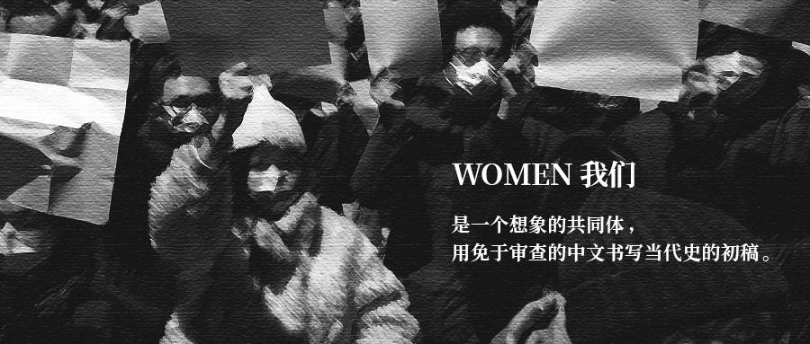